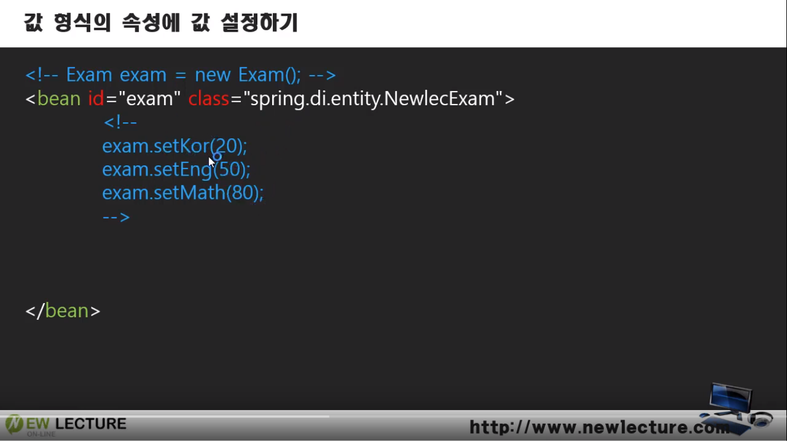
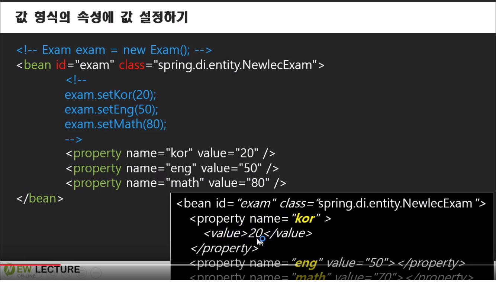
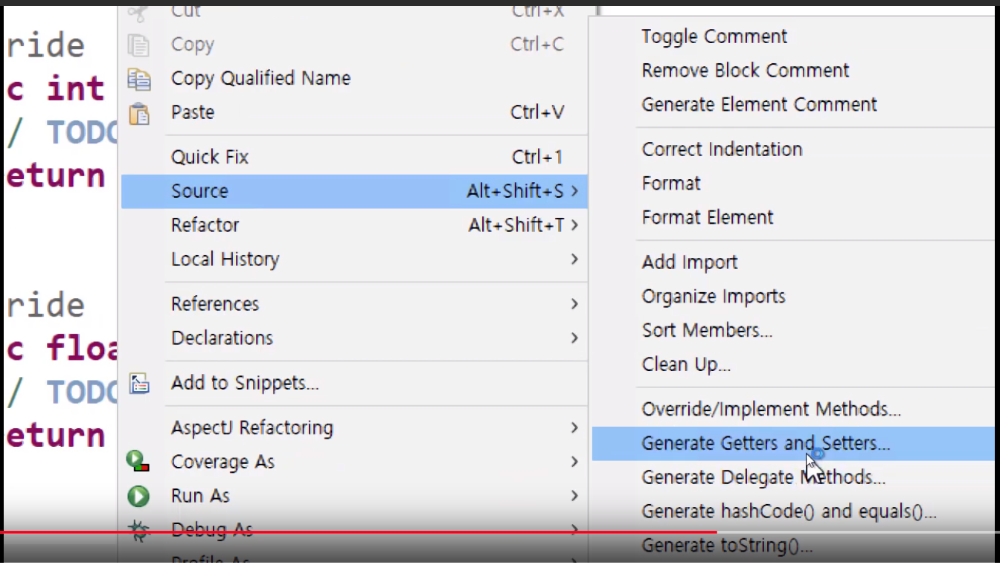
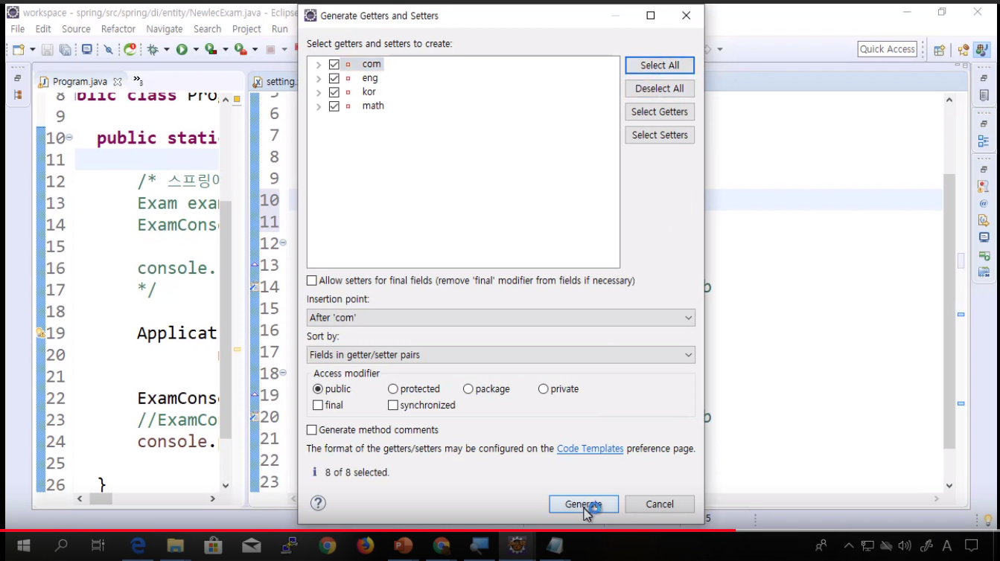
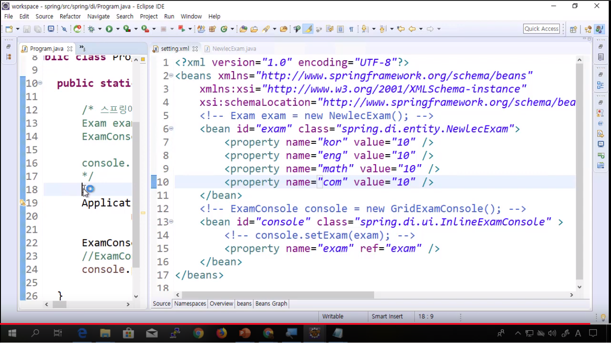
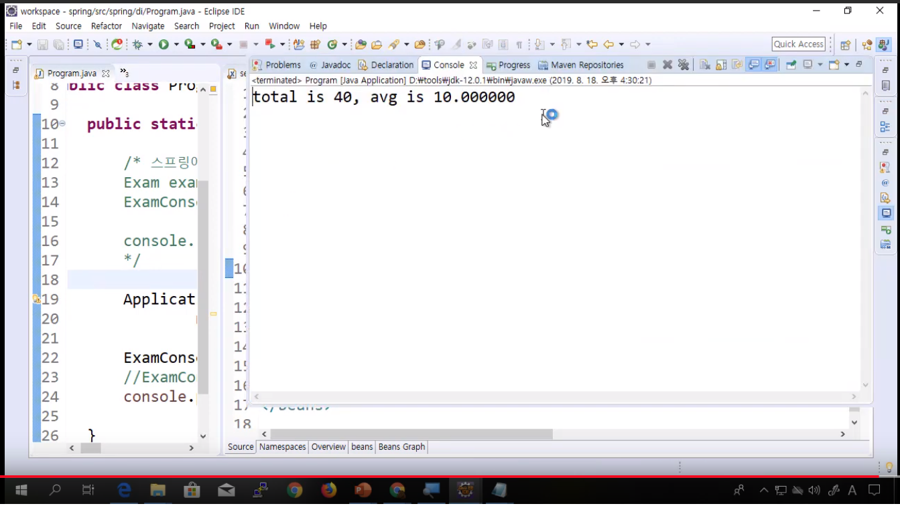

This is personal study note
Copyright and original reference are from:
www.youtube.com/watch?v=9iNvs7aeeDM
스프링 프레임워크 강의 9강 - 값 형식 DI
스프링_프레임워크_강의_9강_값_형식_DI
================================================================================

exam.setKor(20); 과 같은 set 작업을 지시서에서 어떻게 할 것인가?
================================================================================

================================================================================


- Getter 와 Setter 생성
================================================================================


================================================================================
- 자바코드에서 했던 왠만한 코드들 (객체 생성, 객체의 값을 초기화, 객체 조립 등) 을 xml 에서 할 수 있어야한다